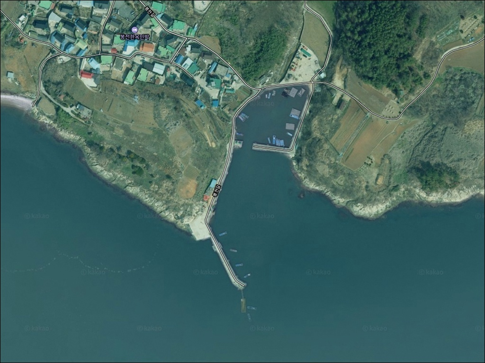
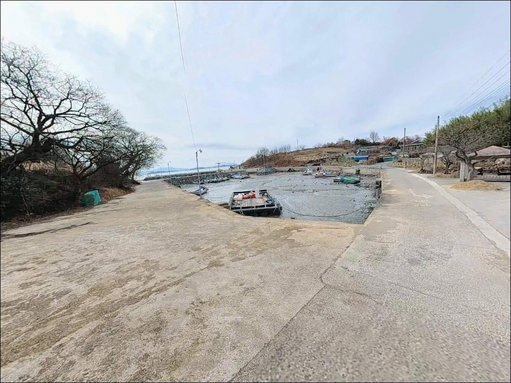
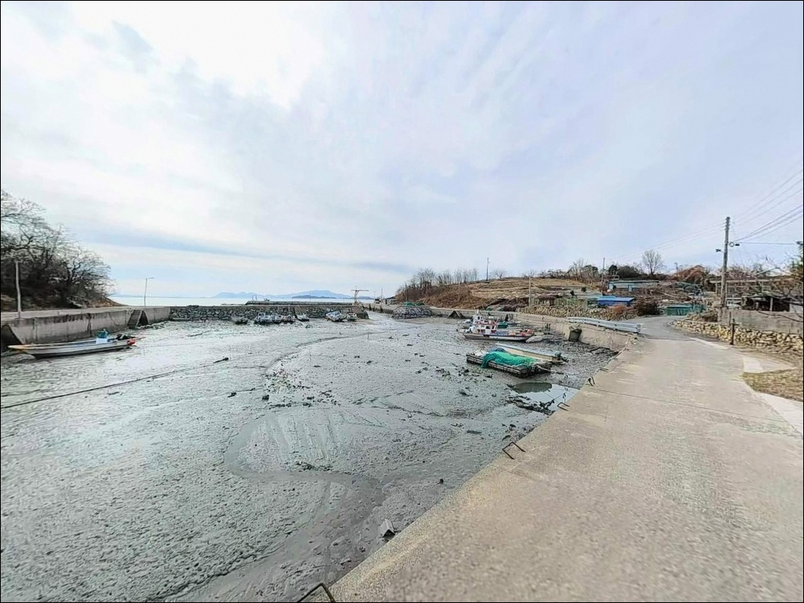
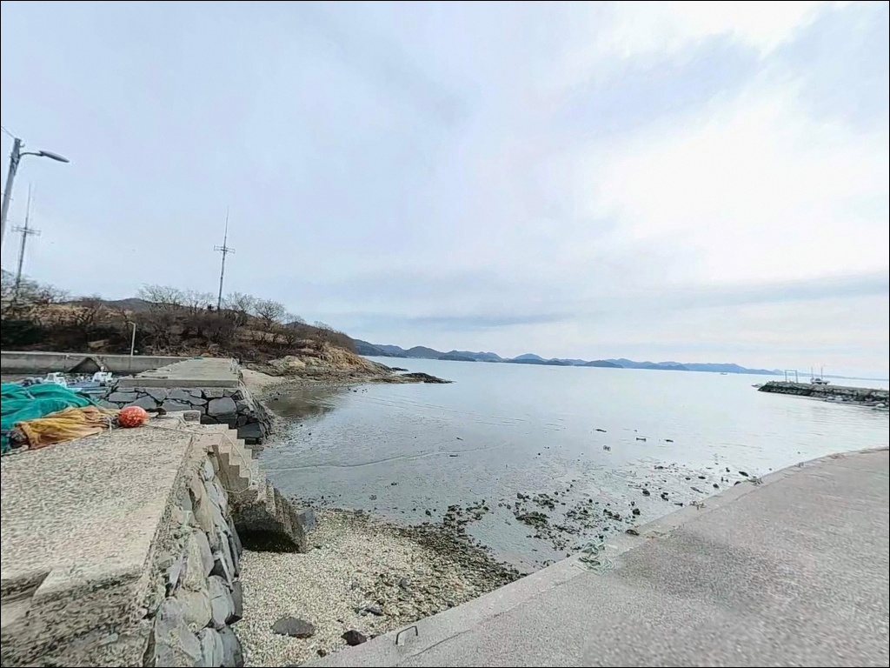
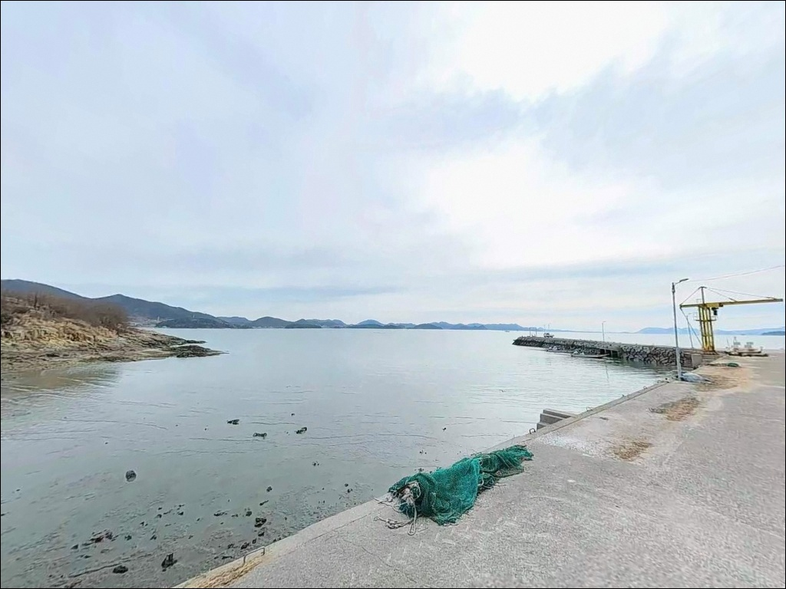
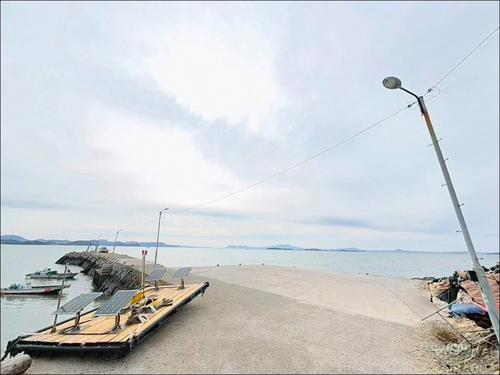
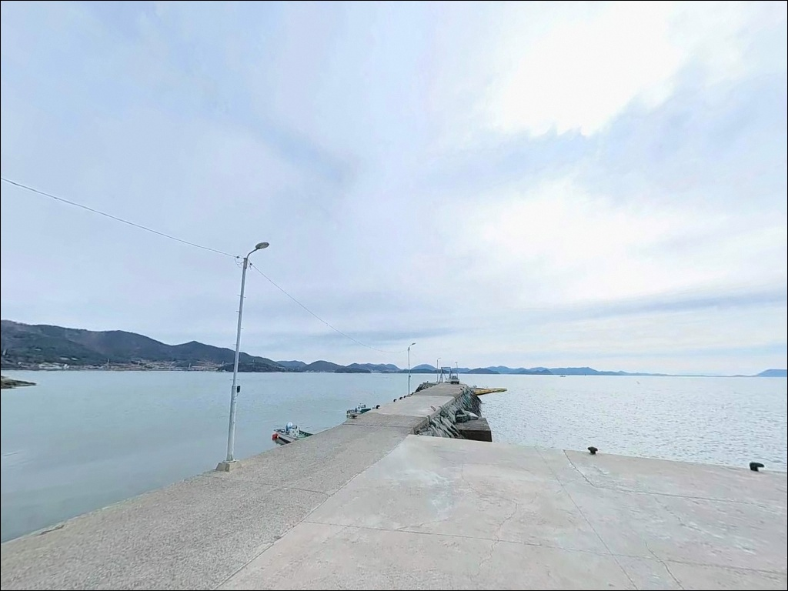
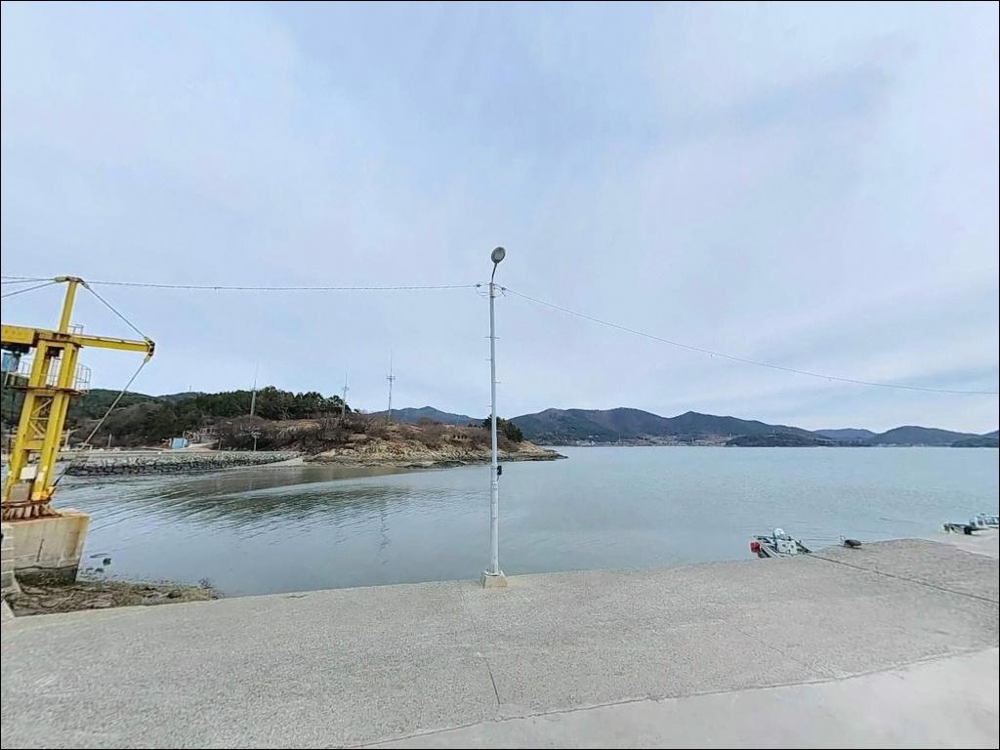
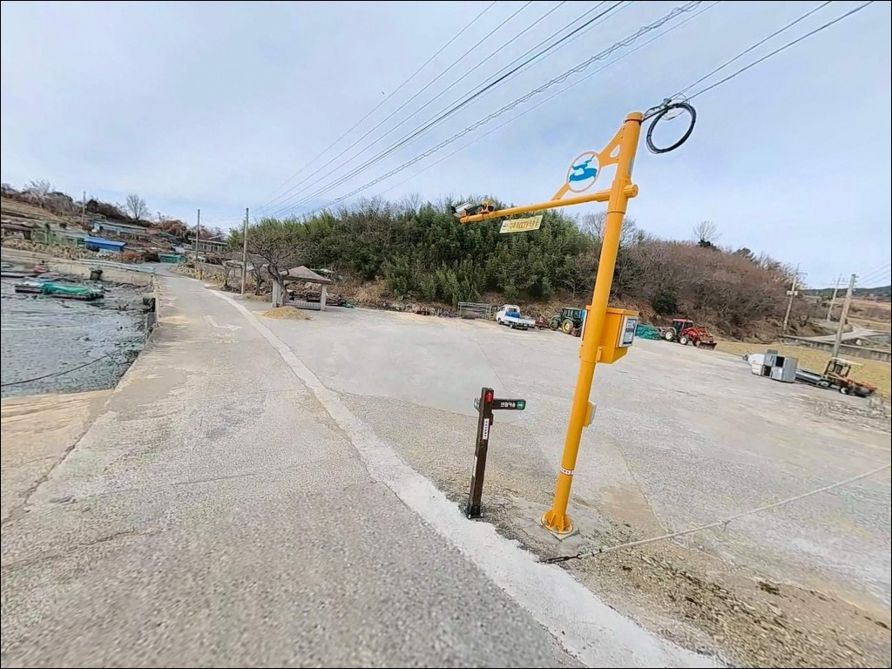

간조에 갯벌 노출되는 여수 봉전방파제, 만조 2시간 전 진입으로 확보한 수심
이 페이지에는 광고(제휴 링크 포함)가 있으며, 광고 링크를 통해 구매하면 운영자가 판매 수익 또는 수수료를 받을 수 있습니다. 포인트 사진: 카카오맵 스카이뷰·로드뷰. 이 페이지의 지도·사진 이미지는 카카오맵의 실제 서비스 이미지와 다를 수 있습니다.


포인트 안내
봉전방파제
전남 여수시 율촌면 봉전리 186-9
여자만 내만에서 낚시를 계획할 때
간조 타이밍을 놓치면 방파제 주변 갯벌이
넓게 드러나면서 채비를 운영할 수심이 사라집니다.
봉전방파제는 내만형 포인트 특성상
물때 확인이 자리 선택의 기준이 되는 곳입니다.
전남 여수시 율촌면 봉전리,
여자만 서안에 자리한 봉전방파제는
2007년 어촌정주어항으로 지정된 소형 항구입니다.
방파제 길이는 약 90m 수준이며
외해 직격이 아닌 폐쇄형 내만 구조라
파도 영향이 거의 없는 안정적인 낚시 환경을
갖추고 있습니다.
이 글은 봉전방파제의 진입 동선,
차박 여건, 물때 및 지형 기반
낚시 방식 적합성에 집중합니다.
조황 단정이나 특정 어종 보장은
이 글의 범위에 포함되지 않습니다.

1. 진입 동선과 차량 접근 여건
봉전방파제는 863번 지방도에서
봉전리 마을 안쪽으로 이어지는
소형 포장도로를 따라 접근합니다.
율촌면 중심지와 접근성이 불량한 지역으로,
구불구불한 선형 구간이 포함된
마을 안쪽 소로가 방파제까지 이어지는 구조입니다.
승용차와 중형 SUV 기준으로
방파제 입구 공터까지 진입이 가능합니다.
도로 폭은 소형 차량 1~2대 교행이 가능한 수준이며,
회차 공간은 방파제 초입 공터와
마을 진입로 인근 도로 폭을 활용하면 됩니다.
대형 캠핑카는 진입로 폭과 회차 공간이 협소하여
방파제 앞까지 진입하기 어렵습니다.
주차는 방파제 입구 물량장 전면부 공터와
선착장 인접 공간을 활용하는 방식이 일반적입니다.
어촌정주어항 특성상 새벽~오전 어선 출입이 있으므로
어선 하역 동선을 막지 않는 자리를
먼저 확인하는 편이 기본입니다.

2. 차박 환경과 야간 체류 여건
봉전리는 어촌 주거지와 논·밭이 함께 섞인
전형적인 농어촌 마을입니다.
민가가 항구 인근까지 이어지는 구조라
완전히 고립된 환경은 아니며,
야간에는 마을 가로등과 항구 주변 조명으로
어느 정도 시야가 확보됩니다.
차량 통행은 많지 않아 전반적으로 조용한 편이지만,
민가가 가까이 위치하는 만큼
야간 소음과 과도한 조명 사용은 자제해야 합니다.
주차 공간 자체가 1~2대 수준에 그쳐
차박을 메인으로 삼기보다는
낚시 후 짧게 대기하는 방식이 현실적입니다.
내만 구조라 파도 소음은 거의 없지만,
겨울철 북서풍이 강할 때는 체감 추위가 심해집니다.
방파제 상단 폭이 넓지 않은 소형 구조이므로
야간 이동 시 미끄럼과 난간 주의가 필요합니다.


3. 주변 편의시설 및 인프라 현황
봉전방파제 반경 3km 이내에는
편의점이나 주유소가 확인되지 않습니다.
가장 가까운 상권은
율촌면 소재지 방향으로 차량 약 10분 거리에 있으며,
식당과 마트 이용이 가능합니다.
완전 자급 체제로 출발하는 것이
현실적인 준비 방식입니다.
응급 상황 발생 시 애양병원이
율촌면 신풍리 방향으로 약 5km 거리에 있습니다.
순천·여수 도심 생활 인프라까지는
차량 이동으로 접근이 가능하므로,
장거리 출조 시에도
보급과 응급 대응 선택지는 확보되어 있습니다.
어촌정주어항으로 방파제와 선착장, 호안도로 등
기본 항만시설이 정비되어 있으나
낚시인용 편의시설은 기대하기 어렵습니다.
식수, 얼음, 낚시 소품 모두
출발 전에 갖추고 현장에 진입하는 편이 좋습니다.

4. 방문 전 반드시 확인해야 할 준비사항
봉전방파제 방문 전 가장 먼저 확인할 것은 물때입니다.
여자만은 조수간만차가 있는 수역으로,
간조 시 방파제 주변 갯벌이 넓게 드러납니다.
바다타임에서 봉전리 기준 물때를 확인하고
만조 전후 타이밍에 맞춰 입장하는 것이
유효 수심을 확보하는 기본 조건입니다.
원투낚시 위주로 운영할 경우
펄·모래 바닥 특성상 밑걸림이 적은 편이지만,
채비 손실에 대비해 여분 채비를 넉넉히 준비하는 편이 안전합니다.
기상청 해상 예보도 출발 당일 아침 다시 확인하고,
강풍·호우 예보가 있을 때는 말단부 접근을 피하는 것이
기본 원칙입니다.
어촌정주어항인 만큼 새벽~오전에는
어선 조업이 이루어지는 공간입니다.
낚시 장비와 차량이 어선 출입 동선을
막지 않도록 자리를 잡아야 하며,
야간에는 구명조끼와 헤드랜턴을 반드시 챙겨야 합니다.

5. 지형 기반 낚시 여건 분석
봉전방파제의 핵심은 여자만 내만이라는
지형 조건에서 비롯됩니다.
방파제는 약 90m 길이로 여자만 방향으로 뻗어 있으며,
외항 쪽은 완만한 경사의 석축,
내항은 콘크리트 직벽 구조입니다.
바닥은 펄과 모래가 혼합된 지형으로
원투 채비의 밑걸림이 적은 편입니다.
수심은 내항 쪽이 얕고
방파제 중간~끝단으로 갈수록 상대적으로 깊어지는 구조입니다.
만조 시 방파제 끝단 기준 3~5m권을 유지하며,
간조 시에는 주변 갯벌이 드러나는 특성이 있어
방파제 중간 지점부터 끝단이 실질적인 유효 포인트가 됩니다.
조류 흐름은 여자만 내만 특성상 완만하게 형성됩니다.
방파제 끝단 꺾임 구간에서 내외항 경계 조류가
일부 형성되는 지점이 있어
흘림찌 채비 운영이 가능합니다.
이 일대 여자만 수역에서는 붕장어, 숭어, 망둑어,
도다리, 볼락, 노래미가 방파제 근처에서
기대해 볼 수 있는 어종입니다.
출조 전 봉전항 일대 최신 조황을 꼭 검색해 보시기 바랍니다.


6. 봉전방파제에 어울리는 낚시 스타일
이 포인트에서 가장 기본이 되는 낚시는 원투낚시입니다.
펄과 모래가 혼합된 바닥 지형은
바닥층 어종 공략에 적합한 조건을 갖추고 있으며,
방파제 중간 지점부터 끝단까지
외항 방향으로 채비를 던지는 방식이 유효합니다.
만조 전후 타이밍에 맞춰 붕장어와 도다리를 노리는 패턴이
이 포인트 지형에 잘 맞습니다.
찌낚시와 민장대 낚시도 운영이 가능합니다.
내항 석축이나 방파제 끝단 내외항 경계 구간에서
만조 전후 흘림찌 채비로
숭어와 학꽁치(시즌 시)를 공략하는
생활낚시 패턴이 안정적으로 형성됩니다.
계절적으로는 봄~가을 사이에
활성도가 올라오는 패턴이 여자만 내만권에서 공통입니다.
라이트 루어낚시도 노려볼 수 있습니다.
방파제 외측 석축과 내항 직벽 경계 구간,
방파제 주변 테트라포드 사이를 대상으로
소형 지그헤드 채비가 유효합니다.
야간 들물 시간대에 가로등 불빛 아래를 공략하면
볼락과 풀치(시즌 시) 반응을 확인할 수 있는 구간입니다.

7. 대안 포인트와 플랜 B 동선
봉전방파제 주차 공간이 여의치 않거나
자리 여건이 맞지 않을 때
첫 번째 대안은 사곡방파제입니다.
봉전방파제에서 약 3~4km 거리에 위치하며
같은 여자만 해역을 공유하는 소형 방파제로,
유사한 내만 낚시 패턴을 적용할 수 있습니다.
두 번째 대안은 여자선착장앞등대입니다.
봉전방파제에서 약 4~5km 거리에 위치하며
여자만 수역의 다른 진입 포인트로
활용할 수 있는 자리입니다.
여자만 해역선 특성상
봉전방파제와 비슷한 내만 생활낚시 패턴이
동일하게 적용됩니다.
반경 10km 권역으로 이동하면
순천만 연안과 소라면 방면 여자만 동안 포인트들이 있습니다.
차박 대체 후보로는
율촌면 인근 순천만 관광지 주변 주차 가능 구간이
화장실 이용이 편리한 선택지입니다.
봉전방파제를 첫 탐색 포인트로 잡고
여자만 서안을 순차적으로 이동하는 동선이
이 권역에서 가장 효율적인 운영 방식입니다.

물때를 알고 가면
봉전방파제가 달라 보입니다
원투낚시와 생활낚시 위주로 여자만 내만을
조용하게 즐기는 낚시인에게
봉전방파제는 잘 맞는 구조입니다.
파도 영향이 적고 바닥 밑걸림이 덜한 편이라
채비 운영이 안정적이며,
인근에 유사 포인트들이 분포해 있어
여자만 서안을 돌아보는 탐색 출조에도 어울립니다.
반면 물때 확인 없이 간조 시점에 진입하거나,
대형 캠핑카를 방파제 앞까지 붙이려 하면
낚시 자체가 불가능해지거나
회차 어려움을 겪을 수 있습니다.
물때 확인, 차량 크기 판단, 자급 준비,
이 세 가지가 갖춰지면
조용한 내만에서 낚싯대를 펼치기 좋은 포인트입니다.
낚시 후 율촌면 일대 여자만 서안을 따라
하룻밤 머물 계획이라면,
주민 생활 공간과 어선 출입 동선을 먼저 파악하고
자리를 잡는 것이
낚시와 차박을 동시에 무난하게 마무리하는
방식입니다.